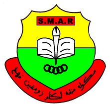
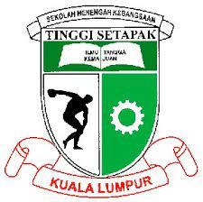
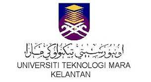
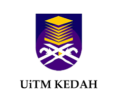

I studied at this school from 2008 to 2010.
I have to chance school because my sibling have to transfer to another school.
This school is located in Jalan Dato Keramat. This school is also near my home
at that time
.
My childhood started from this school, and this school has many
good and easy-to-approach teachers.
.
Sekolah Kebangsaan Jalan Kuantan 1
I continue my study in different school start in 2010 to 2014.
I also took UPSR (Ujian Penilaian Sekolah Rendah) in this school in 2014.
.
I have so many new friends as my study go on in this school.
.
This school is located in Taman Tasik Titiwangsa
.
Sekolah Menengah Agama Rompin Pahang

My secondary stage continued in 2015. I travel from my hometown to my village for 6 months
I move from standard syllybus study to islam concept.
.
Unfortunately I can't go with it and stop in half semester.
.
This school is located in Kampung Tasik, 26800 Kuala Rompin, Pahang
.
Sekolah Menengah Tinggi Setapak

I resume my study from half 2015 semester to 2019 in standard school syllbus
I move back from my village to my homwtown.
.
I also take my PT3 (Penilaian Tingkatan 3) and SPM (Sijil Pelajaran Malaysia) in this school.
.
This school is located in Jalan Ayer Jerneh, Taman Ayer Panas, 53200 Kuala Lumpur
.
Universiti Teknologi Mara (Cawangan Kelantan)

I have to go to Pra Diploma in 2020 because of my SPM result is not unsatisfactory
I take Pra Diploma in Business Management for 6 months.
.
After Covid-19 hits Malaysia, I have to study in online platform
so trought out my semester is mostly at my home and I only stay there for 1 weeks only.
.
This university is located in Kampung Belukar, 18500 Machang, Kelantan.
.
Universiti Teknologi Mara (Cawangan Kedah)

After my Pra Diploma result out, I continued my journey to Diploma in Library Management in UiTM Kedah
I go from Kelantan straight to Kedah for 2 years.
.
Since the Covid-19 is still the thing, I will attend class by online for 1 more year.
.
I start go to Kedah in my late third semester in November 2021.